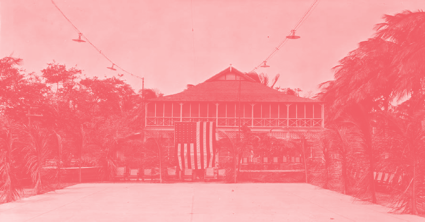

In the early hours of the morning, thousands of striking banana workers and their families were murdered in Ciénaga, Colombia in an event that continues to be remembered as El Masacre de las Bananeras, or The Banana Massacre.
From left to right: Pedro M. del Río, Bernardino Guerrero, Raúl Eduardo Mahecha, Nicanor Serrano, Erasmo Coronel. Photograph taken on March 9, 1929.
Pedro M. del Río, Bernardino Guerrero, Raúl Eduardo Mahecha, Nicanor Serrano, and Erasmo Coronel, leaders of the strike, were all workers in the Santa Marta Division of the banana plantations owned by the Boston-based United Fruit Company, now known as Chiquita.
At the time, workers were complaining of incredibly long workdays, extremely low pay, and a subcontract system that meant labourers were not considered “employees” of the UFC and therefore did not qualify for any of their benefits. Workers earned 2 pesos for a full day or labour, equivalent to $0.13 Canadian.
On October 6, 1928, workers began preparing themselves to strike. They drafted up a list of nine demands – 1
1. Collective insurance
2. Security against work-related accidents
3. Clean living conditions & one day of rest every week
4. A 50% increase in wages for lower-paid workers
5. Workers were forced to shop in company-owned stores which hurt local businesses; they wanted this practice discontinued
6. Elimination of the use of credit slips instead of money
7. Weekly, rather than bi-weekly, payments
8. Direct contracts with the company
9. Enough hospitals & proper sanitation camps for the population of workers
It wasn’t revolutionary– workers were citing existing laws, demanding they be implemented & enforced.
Social conditions of the families living in the Zona Bananera (Banana Zone). United Fruit Company photographic collection, box 31, No. 2999. Photograph taken on April 24th, 1925.
October 7,
1928
Erasmo Coronel, Nicanor Serrano and Pedro M. del Río were appointed as strike negotiators and headed up to Santa Marta to present their nine demands at the UFC headquarters.2 Thomas Bradshaw, the company’s general manager, refused to meet with them.
October 28,
1928
They tried again and Bradshaw told them to leave, insisting that the workers weren’t official employees of the United Fruit Company, regardless of the fact that they provided most of the company’s labour.
November 6,
1928
The workers gave the company an ultimatum, saying that they would go on strike unless their demands were negotiated. The next day, a strike began and thousands withdrew their labour.
“The workers of the Banana Zone comply with all of the laws of the country and, today, in declaring a strike, they obey the law to vindicate their rights, violated daily by the powerful Fruit Company, who looks at the worker with indifference as he wears himself out with ulcers, malaria, tuberculosis and other diseases, without even a humane sentiment that would move the company to comply with the labour legislation."3
The United Fruit Company soon began paying the Colombian military to keep an eye out on the strikers, erasing any sense of solidarity that could exist between the soldiers and workers.
By the fifth week of the strike, the banana zone militarized, with General Carlos Cortés Varga as their leader.
To block the trains loaded with fruit and soldiers from continuing to the port, women and children sat on the tracks.
December 5,
1928
–
Midnight
Midnight
General Carlos Cortés Vargas received a telegram: the government had officialy declared a state of emergency in the Banana Zone (Decree 1).
Cortés Vargas wrote the following:
Article 1: In compliance with Legislative Decree 1 of 5 December 1928, I peremptorily order the immediate dissolution of any meeting of more than three individuals.
Article 2: The government forces are ordered, with legal preventions, to strictly comply with this Decree, firing at the multitude if necessary.
Article 3: No person can move after the military bugle sounds.4
December 6,
1928–
1:30 am
1:30 am
The striking workers were told that the governor of Magdalena wanted them to settle the strike in the town of Ciénaga. Outside the town’s train station, workers and their families gathered by the hundreds.
An account tells that Raul Eduardo Mahecha began warning strikers to go home– he believed the military was setting them up, but was called a coward.5
Cortés Vargas ordered all his troops to march to the train station armed with their machine guns.
People refused to move.
Vargas ordered the crowd, “you have five minutes to disperse,” but the striking banana workers stood their ground.
After the five minutes were up, Vargas threatened
one more time– “I’ll give you an extra minute.”
From the crowd, someone yelled, “you can have your extra minute.”
The soldiers opened fire.
“The human mass fell like a single man, the clash of the discharge drowned out the shouting.”6

People told of garbage trucks driving through the streets that dawn, gathering bodies to dump into the Magdalena River.
Some credit Nobel-prize-winning Colombian author Gabriel García Márquez with bringing this event back into the collective memory in his novel 100 Years of Solitude (1967). Now, the banana massacre continues to be retold in Colombian-Caribbean literature and is a point of reference for labour movements across the world.
The United Fruit Company strategically deflected focus from themselves towards the Colombian military who silenced the strikers in order to satisfy the needs of the company. The facts and figures of the massacre have become obscured by politics, but an archive of telegrams sent from the UFC headquarters in Santa Marta to Washington D.C tells us a lot of what we need to know. Those can be accessed here.
One of the most striking ones reads,
“Sir:
With reference to my previous reports concerning the Santa Marta strike...I have the honor to report that the Bogotá representative of the United Fruit Company told me yesterday that the total number of strikers killed by the Colombian military exceeded one thousand.
I have the honor to be, Sir,
Your obedient servant,
Jefferson Gaffery."
The effects of this strike, the violence against labour unions, and the power that American fruit empires have over developing countries can still be felt in plantations across Latin America today.